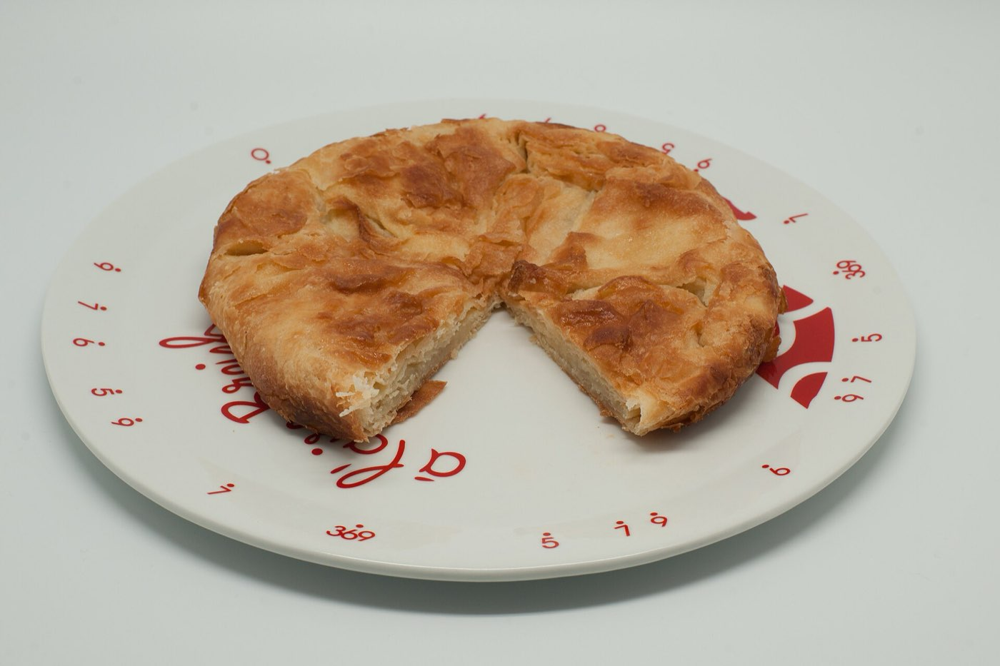
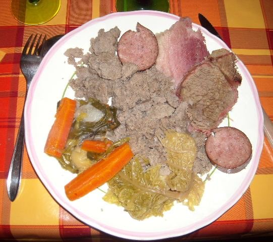

Aug 6–23, 2026 · 2 adults + one 10-year-old · Porto → Nantes → Vannes → Quimper → Dinan → Nantes → Porto · master guide merged and deepened from 23 research files (Claude, ChatGPT, Perplexity deep-research reports), deduplicated — tap any card for the full write-up. Photos load from Wikipedia when online.
Booked and locked. Four bases, three moves, an anticlockwise sweep south → west → north, with Nantes as both bookends. The car is only yours from 17:30 on Sun Aug 9 to 17:30 on Sat Aug 22 — both Nantes stays are car-free, which changes what is possible there.
Dates
Nights
Base
Stay
Anchors
Thu 6 – Sun 9 Aug
3
Nantes
ibis Styles Nantes Centre Gare
Machines de l'île, Château des ducs, green-line art trail, Jardin des Plantes. No car — day trips by TER only (Clisson 18 min, Guérande/La Baule ~1 h).
Sun 9 – Fri 14 Aug
5
Vannes Gulf of Morbihan
B&B HOTEL Vannes Ouest
Carnac alignments, Gulf boat trip, Château de Suscinio + the Arthur, Roi de Bretagne night show (Tue 11 or Thu 13), Rochefort-en-Terre
Fri 14 – Tue 18 Aug
4
Quimper Cornouaille
Airbnb
Quimper old town, Locronan, Pointe du Raz, Crozon peninsula, Concarneau — Filets Bleus Grande Parade Sun 16 Aug
Tue 18 – Sat 22 Aug
4
Dinan Rance valley
Airbnb
Mont-Saint-Michel (~1 h), Saint-Malo (~30 min), Cap Fréhel & Fort la Latte, Cancale oysters, Dinan itself
Sat 22 – Sun 23 Aug
1
Nantes
ibis Styles Nantes Centre Gare
Whatever you missed on arrival. Car returned 17:30, so the evening is on foot.
Three things this itinerary changes.
No car in Nantes, either end. Pick-up is 17:30 Sun 9 Aug at Gare de Nantes, drop-off 17:30 Sat 22 Aug at the same counter. Planète Sauvage no longer works — it is a self-drive safari with no public transport. Swap it for Clisson (18-min TER, and the château is free for under-26s) or a Guérande + La Baule sea day by TER.
Sat 22 Aug is a transfer day on a August Saturday. Dinan → Nantes is ~2 h 30 clear, but this is peak Bison Futé territory and you must make a 17:30 drop-off. Leave Dinan by 13:30 and treat Mont-Saint-Michel as a Wed/Thu job, not a Saturday one.
You arrive in Morbihan on the closing day of Interceltique. The Lorient festival runs to Sun 9 Aug and Vannes is only 60 km away — expect heavy traffic on the N165 that evening. You are driving it from 17:30 anyway, so allow 1 h 30 rather than 1 h 15, and book Sunday dinner in Vannes or buy supplies first: Breton kitchens close early on Sundays.
Transfer days: Sun 9 Aug (evening, after 17:30) · Fri 14 Aug · Tue 18 Aug · Sat 22 Aug. Sat 15 Aug is a national holiday and a Bison Futé black day — you are static in Quimper that day, which is the right place to be. Nothing needs to be driven far on 15 Aug.
Rhythm rule (from your own research): 1–2 sights per day max, one "empty" beach/pool day per base. Everything headline: before 10:00 or after 17:00.
Getting in and out
Thu 6 Aug · Porto → Nantes, easyJet KCZK477. Airport → city centre by Uber, ~€30. (The tramway-bus 87 plus tram, or the airport shuttle, are cheaper alternatives; the shuttle is bundled into the Pass Nantes.)
Sun 9 Aug 17:30 · car pick-up, Gare de Nantes — booked through Keddy/Rentalcars, collected at the Sixt counter. Station pick-up, not airport. Automatics are scarce in France — confirm yours is reserved explicitly, and check the Crit'Air sticker is on the windscreen before you drive off.
Sat 22 Aug 17:30 · car drop-off, Gare de Nantes. 13 days of rental. The hotel is beside the station, so you can drop the car and walk to your room.
Sun 23 Aug · Nantes → Porto. No car — allow 30–40 min to the airport by shuttle or Uber and set off accordingly.
Dates that shape the trip
To Sun 9 Aug · Festival Interceltique, Lorient — ~950k visitors, and its final day is your Nantes → Vannes drive. Traffic caution, above.
Tue 11 & Thu 13 Aug · "Arthur, Roi de Bretagne" son-et-lumière, Château de Suscinio — both fall inside your Vannes stay, confirmed on the 2026 calendar. €17.50 / €11 (10–17), free under 10; 2,000 seats, book online. As of 30 Jul 2026 a municipal order has suspended the pyrotechnics (fireworks) — the son-et-lumière itself is confirmed running; re-check suscinio.fr closer to the date.
Wed 12 – Sun 16 Aug · Filets Bleus, Concarneau — free concerts, Grande Parade Sun 16 Aug 10:30 (€10, under-10 free). Concarneau is 25 min from Quimper, so this lands perfectly in base 3.
Thu 13 – Sat 15 Aug · Grandes marées (coefficient ~102, peak Fri 14) — you are moving Vannes → Quimper on the 14th; the drama is on the north coast, so this mostly affects your Dinan week's beach timing.
Sat 15 Aug · Assumption, national holiday — museums and many restaurants shut or run holiday hours. You are based in Quimper: plan a town day, book lunch ahead.
Jul 4 – Sep 6 · Le Voyage à Nantes, "La Terre" edition — live for both Nantes stays.
What this route trades away
The Pink Granite Coast (Ploumanac'h, Sept-Îles, Trégastel) is not on the itinerary — several of your research files rank it the #1 "wow" for a 10-year-old. From Dinan it is ~1 h 45 each way, so it is a long but possible day trip on Wed 19 or Thu 20 Aug. Île de Bréhat is closer, ~1 h 30. The Pink Granite tab is kept in this guide for exactly that decision.
Base 3 · Dinan, Emerald Coast & Mont-Saint-Michel (Tue 18 – Sat 22 Aug)
Corsair walls, extreme tides (up to 13 m — swim by the tide table), oysters, and the one mandatory day trip into Normandy.
Where to eat picks:Saint-Malo (intra-muros) — Les Korrigans (traditional Breton, reserve in summer), Crêperie Solidor (Solidor quarter, sea view, try the andouillette-camembert galette), La Mouette (family "cuisine familiale"), or budget Crêperie La Caraque/Le Biniou on the seafront. Dinan — La Duchesse Anne (steps from the castle, house-made, seasonal, veggie options) or L'Auberge du Pélican (home-style regional cooking). Book dinners 1–3 days ahead in August everywhere.
Optional · Pink Granite Coast & inland gems (not a base — day trip from Dinan, ~1 h 45)
300-million-year-old pink boulders, puffin islands, and two inland "hidden gems" your researches rave about.
"Land's end": turquoise coves, France's prettiest villages, and the Filets Bleus festival window.
Where to eat picks (Quimper): Crêperie du Frugy (9 rue Sainte-Thérèse, a 50-year Quimper institution near the cathedral, plat du jour ~€12), Ty Loulic (8 rue du Parc, crispy galettes, a local favourite), La Krampouzerie (Place au Beurre, organic/creative fillings), or Au Vieux Quimper (since 1956, moved in 2024 to 14 rue des Boucheries — sources mostly from local producers). All four confirmed open and easy walk-ins in the old town.
Base 1 · Vannes & the Gulf of Morbihan (Sun 9 – Fri 14 Aug)
Warmest, calmest water in Brittany (~4 m tides vs 13 m up north), UNESCO megaliths, and the best family castle.
Where to eat picks (Vannes): Daily Gourmand (on the port, 100% house-made, seasonal + burgers), Café des Orfèvres (18 rue des Vierges, café/salon de thé, easy lunches and weekend brunch, closed Mon), La P'tite Souris (36 Rue du Port, traditional market cuisine, kid-friendly, reserve ahead), or La Crêperie du Port (Rue du Port, house-made galettes, kids' play corner). All four confirmed open and central, walkable from the ramparts. Correction: crêperie Avel-Vras — well-reviewed but is actually in Séné, ~10 min drive south of Vannes, not walkable from the ramparts; its "Vannes" registered address is a sideline bookshop, not the restaurant.
Nantes bookends (Thu 6 – Sun 9 Aug · final night Sat 22 – Sun 23 Aug)
Technically Loire-Atlantique, emotionally Brittany. Le Voyage à Nantes art trail ("La Terre" edition) runs Jul 4 – Sep 6, 2026 along the 22 km green line.
Worth it? The Pass Nantes — a city pass — 2026: 24h €30, 48h €40, 72h €49; reduced child 4–17 €20/€26/€31; family pass (2 adults + 2 children) 48h €106 — bundling Les Machines de l'île, Château des ducs de Bretagne, several museums, an Erdre/Loire cruise, city transport (including the airport shuttle) and even the Nantes–Clisson TER train. If you're packing a full city day plus a Clisson side-trip into your 3 Nantes nights, it usually pays for itself — buy online at levoyageanantes.fr to skip ticket queues.
Lunch picks from the Nantes guide (by green-line stop): Jardin des Plantes — Café de l'Orangerie (terrace inside the garden by the playground, ~€21–25 menu) or quicker Café des Plantes (~€12–16). Bouffay/château — Le Loup, le Renard et la Galette (rated Nantes' best crêperie, lunch menu €14/kids €11, no reservations — arrive by 12:00) or Crêperie Sainte-Croix (Nantes' oldest, since 1948; 2026 lunch formula €13.50, kids' menu €12, high chairs & warmed baby food, closed Sunday) or Barapom (galettes served in paper cones, ~€10 formula, fun for kids). By the Machines — La Grue Jaune (formulas €13.90–20, kids' menu €9.50, board games) or Magmaa Food Hall (9 kitchens + dedicated kids' area, ~€10–15). Jardin Extraordinaire — Krampouezh Naoned (cheap, excellent, cash-only takeaway galettes, closed weekends) or Le Bistrot de Mr Jules on the Butte (2-course €12.50, kids' menu €8.50) — weekday lunches only, closed Saturday, so at a weekend fall back to Magmaa or Café des Plantes. Pont Anne-de-Bretagne is closed to cars until Nov 2026 but open to pedestrians and cyclists throughout — the walk to the Machines works all summer.
Nantes dinner picks & extras:Le P'tit Tonneau (Decré–Cathédrale, steps from the château) — classic bistro, try the curé pané (baked cheese), andouillette or roast camembert, finish with gâteau nantais; ~€25–30/person, book ahead. Le Homard Frites (same area) — small, well-rated seafood spot for a one-off lobster/moules night, ~€25–30/person, reserve. Les Chants d'Avril (rue Fouré/Champ-de-Mars) — farm-to-table bistro on Les Tables de Nantes' list; go for the €19–22.50 lunch formula rather than the pricier dinner menu, and book ahead. Crêperie Chez Cannelle (Île de Nantes, near rue Fouré) — relaxed family crêperie doing breakfast through dinner with a terrace and high chairs, galettes from ~€7.50–9, good backup near Les Machines. For a casual bite by the Loire during the festival, La Cantine du Voyage (7/7 11:00–00:00 through 30 Aug) is an easygoing canteen-style option — plat + drink from €12, kids' menu from €10, no bookings.
📍 Nantes restaurants on the map
Tap a name to open it in Google Maps. Photos below are representative dishes (from Wikimedia Commons), not photos of the actual venue.
Rated Nantes' best crêperie. Galettes ~€9.50–10, lunch menu ~€14. No reservations — arrive by 12:00. Closed Sunday; a second branch has opened on rue de la Baclerie.
Bouffay19 rue de la JuiverieMon–Sat · closed Sun📍 Maps
Café-crêperie-boutique by the yellow Titan crane, near Les Machines. Formulas €13.90/16.90/20, kids' menu €9.50, board games. Daytime only — closes ~19:00, closed Sun–Mon, so it's a lunch/goûter stop, not dinner.
Île de Nantes16 mail des ChantiersTue–Sat 10:00–19:00 · daytime only📍 Maps
Tiny takeaway run by crêpier Bruno Le Borgne — widely called the best galettes in Nantes; trio ~€10–13. Cash or cheque only, no card, and it shuts at 19:30 sharp. Picnic in the Jardin Extraordinaire. Closed weekends.
Bas-Chantenay4 rue de l'HermitageWeekdays, closes 19:30 · cash only📍 Maps
Terrace inside the Jardin des Plantes overlooking the 19th-c. glasshouses and the playground. Local/organic market cooking, ~€21–25; listed in Les Tables de Nantes 2026/27. Open every day 10:00–18:30, including Sunday — it runs to the garden's closing time, so it's breakfast, lunch and salon de thé, not dinner. Book — the terrace tables go first.
Jardin des Plantes15 rue GambettaDaily 10:00–18:30, incl. Sunday📍 Maps
Brasserie directly opposite the station's north exit, ~€12–16. Open every day 7:00–22:00, service continu — the reliable fallback when everything else is shut.
Gare/Jardin des Plantes24 bd de StalingradDaily 7:00–22:00📍 Maps
9 independent kitchens plus a bar and a kids' area, near Les Machines. Dishes ~€10–15. Open 7/7 (Mon lunch only, otherwise to ~23:00) — the safest Sunday option on the island.
Île de Nantes15 rue La Noue Bras de Fer7/7 · Mon lunch only📍 Maps
Neighbourhood bistrot on the Butte Sainte-Anne. Bavette-frites, 2-course €12.50, 3-course €14, plat du jour €9.50, kids' menu €8.50. Weekday lunches only — closed Saturday, and evenings are groups-only by reservation.
Bas-Chantenay11 avenue Sainte-AnneWeekday LUNCH only · closed Sat📍 Maps
Classic bistro near the Erdre and cours des 50-Otages: curé nantais, andouillette, roast camembert, homemade gâteau nantais. ~€25–30/person. Lunch Tue–Sat 12:00–14:00, dinner from 19:30 Wed–Sat; closed Sun–Mon, book ahead. High chairs available.
Small spot doing Breton blue lobster with unlimited homemade frites. Tue–Sat 12:00–13:30 & 19:00–21:30, Sunday lunch only, closed Monday — the two sittings are short, so reserve.
Decré–Cathédrale16 rue Saint-LéonardTue–Sat 12:00–13:30 & 19:00–21:30 · Sun lunch📍 Maps
Farm-to-table bistro (Michelin-listed, "menu mystère") on Les Tables de Nantes' list. Lunch Mon–Fri only; dinner Thursday and Friday only — closed all weekend. Take the €19–22.50 lunch formula and book ahead; confirm they aren't on August closure.
Easygoing canteen by the Loire under agricultural greenhouses, with a potager, playground, pétanque and babyfoot. Open 7/7 11:00–00:00 through 30 August 2026 (season runs 2 Apr – 25 Oct). Plat + drink from €12, with dessert €15, kids' menu (under 10) from €10. No reservations for private guests — just turn up.
Île de Nantes20 quai des Antilles7/7 11:00–00:00 (16 Jun–30 Aug)📍 Maps
Nantes' 1895 Art Nouveau brasserie — a listed monument of tiles, mirrors and painted ceilings, and the city's single most famous room. Oysters, knife-cut steak tartare, profiteroles. Menus €25.90 (2 courses) / €30 (3), Sunday menu €37. Open 7 days, 7:30–00:30 — the reliable Sunday-and-August answer, and worth it for a 10-year-old just to see the ceiling. Book.
Organic burger place a few metres from the Machines — menu ~€14.90, kids' menu with beef, chicken or veggie option plus homemade fries and an ice cream. Big quiet terrace. The pragmatic choice when the elephant queue has eaten your lunch hour.
Home-cooked food in a room full of vintage French toys and games, with a supervised games loft upstairs (€10 per group, proceeds to a school in Kenya) and a giant kermesse once a week. Aimed squarely at families. Closed Sunday and Monday; Tue lunch only.
Olivettes5 rue BaronWed–Fri 12:00–14:30 & 19:00–22:30 · Sat eve📍 Maps
Eat like a Breton
🥞
Galette & crêpe
Savoury buckwheat galette (order a complète), sweet wheat crêpe for dessert.
€8–12 galette€3–7 crêpe
🧈

Kouign-amann
Caramelised butter pastry, born in Douarnenez — try it fresh from a Finistère bakery.
€2.50–4/sliceFinistère
🦪
Cancale oysters
Eaten straight off the market stall, shells tossed on the beach below.
€5–7/dozenBase 1
🍎
Cidre
Served in a ceramic bolée alongside every galette — brut, demi-sec or doux.
€3–5/boléeAdults
🍲

Kig ha farz
North-Finistère pot-au-feu: meat and vegetables with buckwheat "farz" in a cloth sack.
€18–25Léon region
🍬
Caramel au beurre salé
Salted-butter caramel — on crêpes, in sweets, as ice cream. Bordier butter is the local icon.
EverywhereTake-home gift
🥞 The rulebook
Galette = savoury buckwheat (order a complète: ham-egg-cheese), typically €8–12. Crêpe = sweet wheat, €3–7. With a bolée of cider (€3–5; apple juice for the kid). A 3-course menu du jour runs €16–28/adult; kids' menus €7.50–10.
Kouign-amann (caramelised butter pastry, born in Douarnenez — Boulangerie des Plomarc'h there is the pilgrimage address; €2.50–4/slice). Kouignettes (bite-size, ~€1–1.60 each) from the Maison Larnicol chain (Concarnau, Saint-Malo, Quimper) are an easy way to sample flavours without one giant pastry. Also: far breton, gâteau breton, caramel au beurre salé on everything, palets bretons.
Seafood: oysters in Cancale (base 1) and Locmariaquer (base 4); moules, scallops. Bordier butter is from Saint-Malo. Cancale's oyster market: ~dozen €5–7 plus ~€0.50 shucking + €0.50 for a lemon.
Crêperies are the cheapest, most kid-proof dinner everywhere. Quimper alone has 34. Rated picks along the route: Grain Noir and Galettes de Saint-Malo (Saint-Malo, inside the walls); Art'Bilig and Crêperie Ahna (Dinan); Au Vieux Quimper (Quimper old town).
🍓 Beyond crêpes
Kig ha farz — a Léon (north Finistère) pot-au-feu of meat and vegetables with buckwheat "farz" cooked in a cloth bag; hearty comfort food, often a set "soirée kig ha farz" event.
Cotriade — a Breton fisherman's fish stew/soup, Brittany's answer to bouillabaisse; look for it in western port towns.
Plougastel strawberries (near Brest) — a regional icon, sweet elongated gariguette berries sold at markets and pick-your-own farms Jun–Sep; also turns up as sorbet, jam and liqueur.
For the adults: chouchen (Breton mead), lambig (apple brandy) and pommeau (apéritif) are worth a taste as an evening ritual or souvenir.
Rent places with kitchens: market breakfasts + a couple of self-catered dinners is the budget lever.
🐄 Dairy experiences (kid-approved)
Ferme Fromagère de Suscinio (Sarzeau, base 4) — watch the pie-noir cows milked at 4:30pm, farm café, Tome de Rhuys cheese and Gwell (a Breton fermented milk, like yogurt — good with honey or jam for a kid).
La Maison du Beurre Bordier (Saint-Malo) — watch butter being hand-beaten in front of you, taste the flavoured butters (seaweed, salted caramel).
Beillevaire (Machecoul, 40 min S of Nantes) — glass gallery over the butter/cheese works, guided visits weekday mornings.
Le Curé Nantais (Pornic) — 45-min visit + tasting €7, free under 6, book online.
Le Gall butter (Quimper) — churning demo tour, book ahead (dates/prices are limited — go through the Quimper tourist office).
August heat: carry a cool bag for raw-milk cheeses.
🎉 Festival food moments
Filets Bleus (Concarneau, Aug 12–16): free concerts + "Village de la mer" — fishing, shells, sea-rescue for kids.
Fest-noz (Breton dance nights) run all summer and welcome families.
Dinner reservations matter in August — book the same morning at minimum.
Driving & parking cheat-sheet
🚗 The car
Booked: Keddy/Rentalcars, Sixt counter at Gare de Nantes — pick-up 17:30 Sun 9 Aug, drop-off 17:30 Sat 22 Aug (13 days). Not the airport. Automatics are scarce — confirm yours is reserved explicitly. Compact is best for village lanes.
Brittany has zero toll roads — free 110 km/h expressways (N165, N137, N12) link everything. A84 to Mont-Saint-Michel: also free.
Child seat: under-10s must ride in the back in a booster. At 10 a normal belt is legal — but the booster is still the safe call. Order with the car.
Priorité à droite at unmarked junctions; 0.5 g/L alcohol limit; hands-free only (earbuds banned).
Fuel at supermarket stations (Leclerc/Intermarché) — SP95-E10 ~€1.90/L, diesel ~€1.90/L (national average, Jul 2026); motorway/branded stations cost more. A 50 L tank ≈ €95.
Crit'Air sticker (€3.85, official site only) needed to enter central Nantes/Rennes low-emission zones — ask the rental desk if the car has one; a modern rental is Crit'Air 1–2 and enters freely once the sticker is displayed. Fine for non-display: €68.
Bison Futé traffic: Saturday 1 Aug 2026 is forecast as one of the worst national travel days (black in places); Saturday 8 Aug is also busy — avoid long transfers those days, drive mid-week or early morning.
🅿️ Park smart (saves €10–25/day)
Saint-Malo: Paul Féval park-and-ride €3.30/day + free shuttle (covers 5 people). Never street-park intra-muros in August (€45 fine).
Dinan: 7–8 free P+R lots, 10–15 min walk, some with free shuttle.
Concarneau: free lots (Gare, Caserne, du Lin) + Coralie buses; essential during Filets Bleus.
Quimper: street parking free 12–2pm and after 5pm.
Mont-Saint-Michel: mandatory lots 2.5 km out + free "Le Passeur" shuttle. Price conflict in your files — €9.80/day vs €20–28/day tiered (Jul–Aug): the higher tiered figures look current; verify when booking. No free evening parking in Jul–Aug.
Locronan €4/day · Rochefort-en-Terre ~€6/day · Pointe du Raz €8/day · Cap Fréhel ~€3 (or park free at Fort la Latte and walk the cliff path).
Apps: PayByPhone + Flowbird (+ Presto Park for Concarneau). Register plates before the trip.
🌊 Sea & weather
Water ≈ 18 °C everywhere in August — bracing. Rash vests help for long swims.
North coast tides up to 13 m: sea retreats hundreds of metres — plan swims around high tide; south coast (~4 m) is calmer and easier with a child.
Grandes marées Aug 13–15 (coef 102 on Fri 14).
Wild Atlantic beaches (Côte Sauvage, La Palue) = surf & currents, not for swimming.
Rain plan per base: Grand Aquarium (N) · Vallée des Saints sculptors' workshop (PG) · Océanopolis / Quimper museums (W) · Suscinio interiors + Carnac Prehistory museum (S) · Machines (Nantes).
⏰ Crowd rules
Everything iconic: before 9–10am or after 5pm. Midday = beach, boat, lunch.
MSM: be at the parking by 8:30–8:45 for the 9:00 abbey opening; queues hit 30–60 min midday.
Bréhat has a daily visitor cap until ~Aug 22 — morning boats only, go early.
Locronan & Rochefort-en-Terre before the tour buses (≤10am).
Booking checklist
Now
☐ 5 lodgings (kitchen + parking; ~€100–150/night as gîte/apartment/mobile-home; avoid Saint-Malo intra-muros & beachfront Carnac for budget)
☐ Car — Keddy/Sixt, Gare de Nantes, 9 Aug 17:30 → 22 Aug 17:30 (automatic if needed; booster seat for a 10-year-old)
☐ Grand Aquarium Saint-Malo slot (€19.90/€15.90) · Océanopolis timed ticket (check renovation status & price)
☐ Forêt Adrénaline Carnac slot (Junior €18) if doing ropes day
Facts to re-verify at booking (your files conflict): MSM parking price · MSM abbey adult price · Océanopolis tariffs (renovation-era, three versions across files) · Bréhat visitor-cap end date (Aug 22 vs 23).

.jpg)


.jpg)